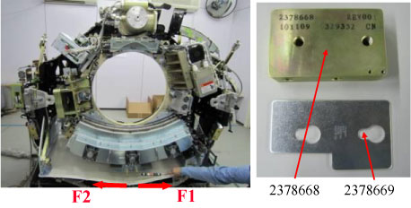
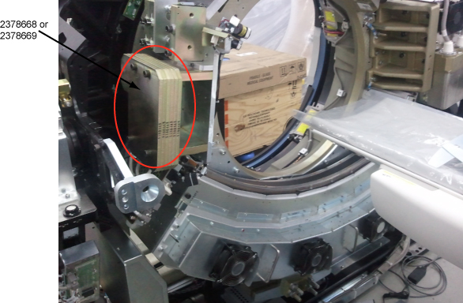
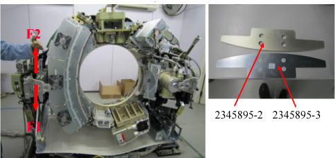
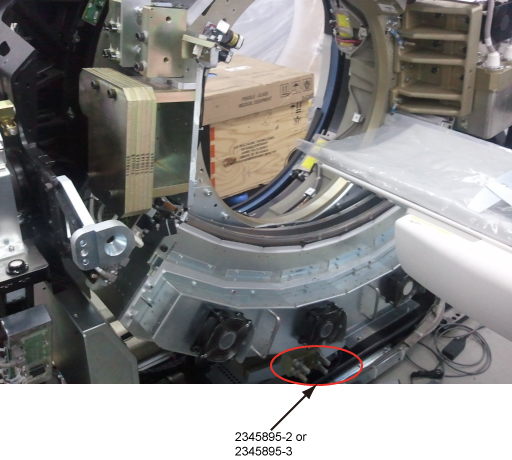

Gantry balance adjustment at 78 degree.
First set Gantry of 78 degree weight at horizontal position, then measure F1 and F2 with spring scale as shown below illustration

| NOTE: | Along tangential direction |
If F2 > F1, decrease weight, until |[F2-F1]| / 2 < 0.25 Kg; otherwise increase weight, until |[F2-F1]| / 2 < 0.25 Kg. Refer to Table 1
Table 1: 78 degree weight adjustment
| |[F2-F1]| / 2 | QTY of weight | Weight PN | Description |
| 0~0.25 | 0 | ||
| 0.26~0.50 | 1 | 2378669 | 78 weight - M |
| 0.51~0.75 | 2 | 2378669 | 78 weight - M |
| 0.76~1.00 | 3 | 2378669 | 78 weight - M |
| 1.01~1.25 | 4 | 2378669 | 78 weight - M |
| 1.26~1.50 | 5 | 2378669 | 78 weight - M |
| 1.51~1.75 | 6 | 2378669 | 78 weight - M |
| 1.76~2.0 | 7 | 2378669 | 78 weight - M |
| 2.01~2.25 | 8 | 2378669 | 78 weight - M |
| 2.26~2.50 | 9 | 2378669 | 78 weight - M |
| 2.51~5.0 | 1 | 2378668 | 78 weight - L |
| 5.01~7.5 | 2 | 2378668 | 78 weight - L |

Gantry balance adjustment at 180 degree.
First set Gantry of 180 degree weight at horizontal position, then measure F1 and F2 with spring scale as shown in below illustration

| NOTE: | Along tangential direction |
If F2 > F1, decrease weight, until |[F2-F1]| / 2 < 0.25 Kg; otherwise increase weight, until |[F2-F1]| / 2 < 0.25 Kg. Refer to Table 2
Table 2: 180 degree weight adjustment
| |[F2-F1]| / 2 | QTY of weight | Weight PN | Description |
| 0~0.25 | 0 | ||
| 0.26~0.50 | 1 | 2342895-3 | weight, 180DEG, 1.5mm |
| 0.51~0.75 | 2 | 2342895-3 | weight, 180DEG, 1.5mm |
| 0.76~1.00 | 3 | 2342895-3 | weight, 180DEG, 1.5mm |
| 1.01~1.25 | 1 | 2342895-2 | weight, 180DEG, 6mm |
| 1.26~2.50 | 2 | 2342895-2 | weight, 180DEG, 6mm |
